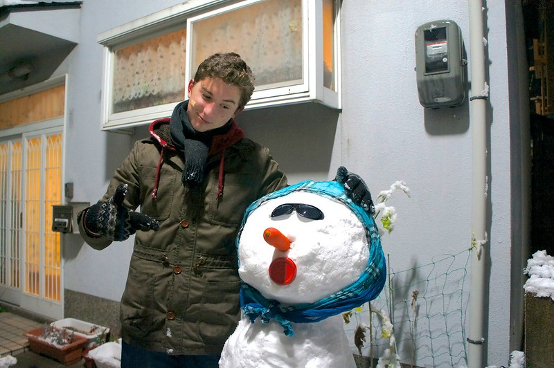

My First Snow in Kyoto
[Click the image to view on Google Maps]

I managed to make a friend who I named Jak Frust. He managed to stay up quite a while after all the snow melted.
Next Page
Previous Page
RETURN